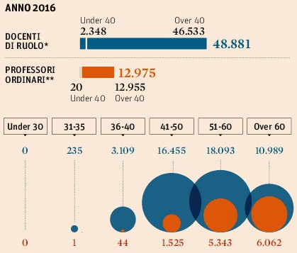

Si consideri il seguente grafico con la distribuzione di professori universitari (e tra loro quello Ordinari) suddivisi per fasce d'età.
Il grafico compare in un articolo de Il Sole 24 Ore dal titolo Università, in cattedra solo 20 ordinari con meno di 40 anni
Analisi
Analizzare il grafico sopra riportato secondo gli aspetti seguenti:Question:- è stata definita chiaramente o è evidente una domanda (o più di una) a cui la visualizzazione risponde?
La domanda, sebbene non presente direttamente nel grafico, è evidente dal titolo dell'articolo. Si tratta di evidenziare la proporzioni limitata di professori giovani (sotto i 40) e dei professori ordinari in particolare
Osservazione: i professori ordinari sono un sottoinsieme dei docenti di ruolo, in particolare rappresentano la qualifica più elevata nella progressione di carriera accademica.
Data:- i dati mostrati sono validi e supportano la domanda?
I dati presentano due problemi principali:
- Il numero di professori under 40 nei due grafici sembrano diversi
- Nel grafico superiore 2384 docenti under 40 di cui 20 ordinari
- Nel grafico inferiore 3334 (=235+3109) docenti e 45 (=1+44) ordinari
Questa discrepanza può essere spiegata come un errore oppure considerando che a rigore l'espressione under 40 comprende i docenti fino a 39 anni. Se accettiamo questa lettura significa che ci sono 960 docenti con esattamente 40 anni tra cui 24 ordinari.
- I range di età riportati non sono uniformi, alcuni sono da 5 anni, altri da 10. Questo comporta che il numero di docenti non può essere direttamente confrontato. Un confronto diretto altera la percezione delle differenze esistenti.
Inoltre, occorre considerare che per confrontare la distribuzione di età dei professori in generale e dei professori ordinari può essere appropriato l'uso di percentuali invece di valori assoluti. Questo non richiede nuovi dati ma semplicemente la visualizzazione di dati derivati da quelli già presenti nella visualizzazione originale.
- Il numero di professori under 40 nei due grafici sembrano diversi
Visual:le caratteristiche visuali sono usate appropriatamente?
Riguardo gli aspetti visuali si valuti l’integrità visuale secondo i tre aspetti:
Proportionality:- le misure sono riportate in maniera uniformemente proporzionale?
Il diagramma a barre (al netto della linea di separazione) appare proporzionale
Il diagramma a bolle riporta i valori in proporziona alle aree. Nonostante la proporzionalità geometrica le aree hanno problemi di percezione fisiologica.
Utility:- tutti gli elementi presenti nel grafico trasmettono informazioni utili?
La linea tratteggiata non è strettamente necessaria, è sufficiente la spaziatura tra le barre.
Clarity:- i dati del grafico sono chiaramente identificabili e comprensibili (opportunamente descritti)?
In generale gli elementi sono ben identificati e comprensibili. I colori delle barre del primo grafico fungono implicitamente da legenda per il secondo, questo potrebbe essere di non immediata lettura (la scelta del designer è andata nella direzione della minimalità)
La linea tratteggiata rende la seconda barra del primo grafico più prossima al secondo grafico mentra la separa dalla prima barra del primo grafico.
Design
Riprogettare la visualizzazione in modo da risolvere i problemi evidenziati nell'analisi.
Si sceglie di effettuare il re-design del secondo grafico, quello più dettagliato. I dati (derivati da quelli riportati nell'originale) sono stati aggregati in modo da riferirsi a intervalli di età omogenei e quindi confrontabili.
Prima soluzione, utilizzo di barre affiancate. Considerazione: non è ovvio, senza note addizionali, capire che la barra dei prof. ordinari rappresenta una parte dei docenti.
Seconda soluzione, utilizzo di barre impilate (stacked). Si è deciso di rappresentare due categorie complementari (Ordinari e NON Ordinari). In questo caso è più evidente il rapporto tra le categorie di docenza.
Terza soluzione, linee e aree sovrapposte. In questo caso la relazione tra le diverse categorie di docenza è più evidente, inoltre il valore molto piccolo dei docenti nella fascia 31-40 (45) risulta più visibile rispetto alle soluzioni a barre.
Quarta soluzione, si riportano i valori percentuali di distribuzione tra le fasce di età delle diverse categorie di docenti.
In aggiunta ai dati dettagliati, qui sotto riporto i diagrammi relativi alla dicotomia under/over 40. A differenza dell'originale, i valori usati in questo diagramma sono coerenti con quelli nell'altro diagramma. Si usano degli slope graph per facilitare il confronto.
Prima alternativa: slope chart con i valori assoluti dei numeri di professori.
Seconda alternativa: slope chart con percentuali su docenti e ordinari.
Inserire le risposte all'interno del presente file,
in particolare negli elementi <div>
che hanno come classe answer.